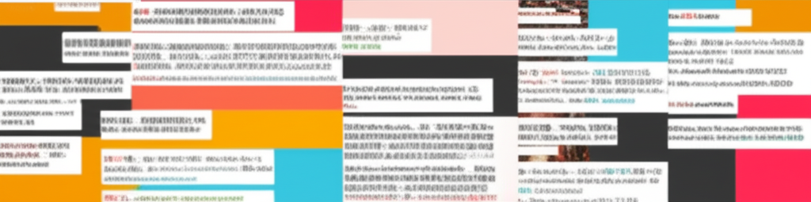

# 熱門新聞摘要：汽車、娛樂、房產與社會萬象
（引言）這篇文章整理了近期的熱門新聞，涵蓋汽車資訊、娛樂八卦、房產動態以及社會事件，希望能讓讀者在短時間內掌握各領域的最新趨勢。
## 主體內容
### 第一點：汽車產業動態與車評
8891汽車網站持續提供最新的汽車新聞與專業車評。近期重點包括：
* **福特Focus Wagon紐柏林限定版上市：** 配備升級，價格具吸引力。
* **豐田RAV4車型調整：** 入手門檻提高。
* **Alfa Romeo品牌回歸：** 啟動台灣官方社群媒體。
* **電野馬躲貓貓的地方：** YouTube上關於福特 Mustang Mach-E 的趣味影片。
這些新聞顯示了汽車市場的競爭激烈，以及車廠不斷推陳出新的努力。
### 第二點：娛樂八卦與社會事件
娛樂圈方面，42歲的藝人徐小可分享了她跳鋼管舞的影片，展現了驚人的體態和舞技，引起網友熱議。此外，也有一則關於人夫做親子鑑定發現被戴綠帽的社會新聞，令人唏噓。
* **徐小可鋼管舞：** 身材火辣，舞姿驚艷。
* **親子鑑定風波：** 人夫努力拚二胎，卻發現女兒非親生。
這些新聞反映了娛樂圈的活力和社會上潛藏的家庭問題。
### 第三點：房產資訊與趨勢
房產市場方面，有網友討論是否應該買房自住，或者繼續維持租屋生活。591房屋交易網的討論區也提供了租屋、房屋買賣等相關資訊。此外，還有關於二胎房貸利率的比較分析。
* **買房 vs. 租房：** 引發網友熱烈討論。
* **591房屋交易網：** 提供多元的房產資訊。
* **二胎房貸：** 提供利率比較分析。
這些資訊顯示了房產市場的複雜性和購房者面臨的挑戰。
## 結論
（總結）總體而言，近期的新聞涵蓋了汽車、娛樂、房產等多個領域。汽車市場不斷推出新車型，娛樂圈充滿話題，房產市場則持續受到關注。這些新聞不僅反映了各領域的發展現況，也提供了讀者了解社會脈動的窗口。